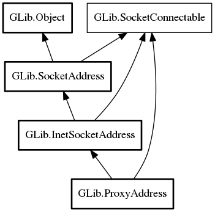

ProxyAddress
Object Hierarchy:

Description:
Content:
Properties:
Creation methods:
Methods:
- public unowned string get_destination_hostname ()
Gets this's destination hostname;
that is, the name of the host that will be connected to via the proxy, not the name of the proxy itself.
- public uint16 get_destination_port ()
Gets this's destination port; that
is, the port on the destination host that will be connected to via the proxy, not the port number of the proxy itself.
- public unowned string get_destination_protocol ()
Gets the protocol that is being spoken to the destination server; eg,
"http" or "ftp".
- public unowned string get_password ()
Gets this's password.
- public unowned string get_protocol ()
Gets this's protocol.
- public unowned string get_uri ()
Gets the proxy URI that this was
constructed from.
- public unowned string get_username ()
Gets this's username.
Inherited Members:
All known members inherited from class GLib.InetSocketAddress
All known members inherited from class GLib.SocketAddress
All known members inherited from class GLib.Object
All known members inherited from interface GLib.SocketConnectable